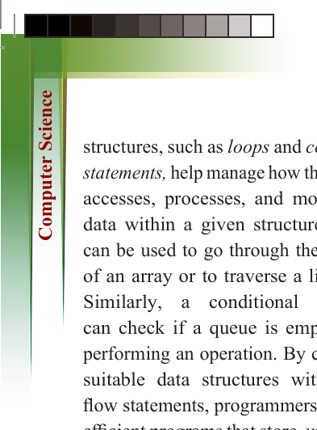
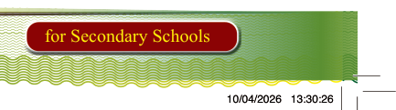
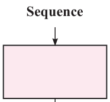
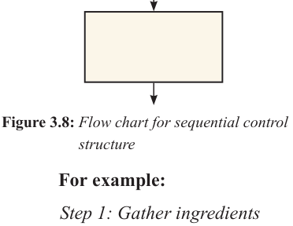

122
for Secondary Schools
structures, such as loops and conditional
statements, help manage how the program
accesses, processes, and modifies the data within a given structure. A loop
can be used to go through the elements
of an array or to traverse a linked list.
Similarly, a conditional statement can check if a queue is empty before
performing an operation. By combining
suitable data structures with control
flow statements, programmers can build
efficient programs that store, update, and
process data effectively.
Control flow structures
In programming, control structures define how a program’s instructions
are executed. They determine the order
of execution, allow decisions between
different paths based on conditions, and
enable the repetition of code blocks.
These structures form the foundation for

building logical and flexible programs.

There are three types of control

structures, namely sequential, selection,


and iteration.

1. Sequence


The sequence control structure is the

most basic form of control flow. In


this structure, program instructions are

executed one after another, from top to

bottom, in the exact order they appear.

Each step runs exactly once. A real-

world analogy is following a step-by-step

cooking recipe, as shown in Figure 3.8.

Sequence






Figure 3.8: Flow chart for sequential control structure
For example:
Step 1: Gather ingredients
Step 2: Prepare utensils
Step 3: Make a “chapati”
2. Selection (if-else)
The selection control structure allows
a program to make decisions based on
certain conditions. It directs the program
to follow different paths depending on
whether a condition is true or false.
The basic concept of selection flow control is that the computer determines which action to take based on whether a condition or test evaluates to true or false as shown in Figure 3.9.


ComputerScin